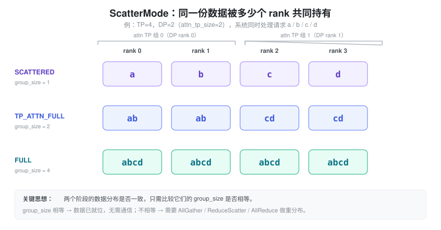
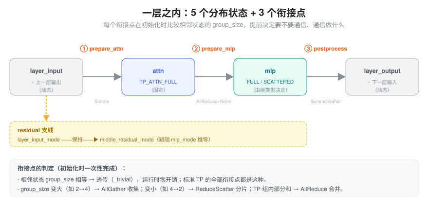
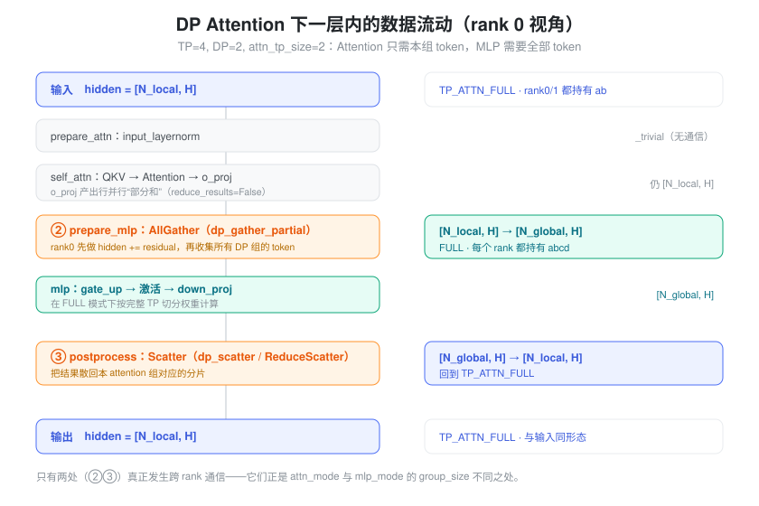

一、问题：数据在层内会处于不同的「分布状态」
一个 Transformer 层由 Attention 和 MLP 两个子模块串联而成。在张量并行（TP）下，两个子模块内部都用「列并行 → 行并行」的方式切分线性层，行并行线性层算完后得到的是各 rank 的部分和，需要一次 AllReduce 才能合并成完整结果。这就是经典的 Megatron-LM 范式：每层固定两次 AllReduce，所有 rank 自始至终持有相同的完整 token 序列，逻辑非常简单。
真正的复杂性来自 DP Attention：同一个 TP 组内，不同 rank 负责不同请求的注意力计算（数据并行地切分 token），但 MLP 的权重仍按完整 TP 切分、需要看到所有 token。于是同一份 hidden_states 在一层的不同阶段，处于不同的分布状态：
- Attention 阶段：每个 attention 子组只持有自己那部分 token
- MLP 阶段：需要把所有子组的 token 聚齐
要让计算正确，就必须在「阶段切换」的位置插入恰当的集合通信（AllGather / ReduceScatter / AllReduce），把数据从一种分布状态搬到另一种。
难点在于：这些通信不是固定的。它取决于并行配置（TP、DP、是否
DP Attention）、层的类型（dense 还是
MoE）、乃至具体的后端优化开关。如果在每个 forward 里用一堆
if/else
判断”现在该不该通信、该做哪种通信”，代码会迅速失控，而且每次
forward 都在重复做同样的判断，白白浪费时间。
LayerCommunicator（layers/communicator.py）就是为解决这个问题而生：用一套统一的抽象描述”数据在层内各阶段的分布状态”，并在模型初始化时就把每个衔接点需要的通信操作推导好、绑定好；运行时只管执行，不再判断。
二、抽象：用「分布状态」描述数据，用「状态差异」推导通信
2.1 ScatterMode：同一份数据被几个 rank 共同持有
整套抽象的基石是一个很克制的概念 ——
ScatterMode。它描述的不是”数据在哪个 rank
上”，而是一个更本质的量：同一份数据，被多少个 rank
共同完整持有。

以 TP=4、DP=2（因此每个 attention 子组
attn_tp_size=2）、系统同时处理请求 a/b/c/d
为例，三种核心状态是：
- SCATTERED：每个 rank 只独占一个分片（a、b、c、d 各一份），对应「持有者数量」= 1
- TP_ATTN_FULL：一个 attention TP 组内的
rank 持有本组完整数据（rank0/1 都有 ab，rank2/3 都有
cd），持有者数量 =
attn_tp_size= 2 - FULL：所有 rank
都持有全部数据（abcd），持有者数量 =
tp_size= 4
把「持有者数量」记为
group_size，抽象的精髓就浮现了：判断两个阶段的数据分布是否一致，只需比较它们的
group_size
是否相等。相等，说明数据已经在对的分布上，什么都不用做；不相等，就需要一次通信把它搬过去。至于搬的方向：
group_size变大（如 2 → 4）：数据要”铺开”给更多 rank → AllGathergroup_size变小（如 4 → 2）：数据要”收拢”并顺带归约 → ReduceScatter- 同一
group_size内还是部分和：需要就地合并 → AllReduce
一个本来需要枚举各种配置组合的问题，被压缩成了「比较两个整数」。
2.2 把一层拆成五个状态、三个衔接点
有了 ScatterMode，就可以给一个 Transformer
层标注出它内部的五个分布状态，以及状态之间的三个衔接点：

- 五个状态：
layer_input→attn→mlp→layer_output，外加一条与它们并行的middle_residual（残差支线） - 三个衔接点：
prepare_attn（进入注意力前）、prepare_mlp（注意力到 MLP 之间）、postprocess_layer（层末）
其中 attn 状态固定为
TP_ATTN_FULL（注意力计算要求 TP
组内看到相同的完整 token
序列），是整套推导的锚点。mlp
状态则是真正的”自由变量”，由层的类型决定（dense 还是
MoE、是否全 DP 等）；其余状态再由这两者向两端推导出来。
这样一来，是否需要通信就一目了然。举两个极端：
标准 TP（无 DP Attention）：此时
attn_tp_size == tp_size，意味着
TP_ATTN_FULL 和 FULL 的
group_size 相等。于是五个状态的
group_size 全都一样 ——
相邻状态之间没有任何重分布需求，三个衔接点全是”透传”。唯一的通信来自
attention 和 MLP 内部行并行层的 AllReduce，退化回经典
Megatron 范式。
TP=4 + DP=2：attn 的
group_size 是 2，mlp（FULL）是
4。于是 attn(2) → mlp(4) 要
AllGather，mlp(4) → layer_output(2) 要
Scatter。两处 group_size 不等的地方，恰好就是两处真正发生跨
rank 通信的地方。
2.3 判定前移：初始化时推导，运行时零判断
抽象带来的最大收益是把”要不要通信、通信做什么”的判断从运行时搬到了初始化时。
模型构建时，LayerScatterModes
为每一层算好五个状态，LayerCommunicator
再据此为三个衔接点各绑定一个静态函数（透传、AllGather、ReduceScatter……）。此后每次
forward 直接调用绑定好的函数，不再有任何
if/else。这既消除了热路径上的分支开销，也让「不同配置
/
不同层类型自动得到不同通信方案」成为初始化期的自然结果，而不是散落在
forward 里的特判。
三、落到实现：三个衔接点各做什么
三个衔接点由三个策略类负责，每个类在初始化时根据相邻状态的组合选出一个具体实现。下面结合 Qwen3 + DP Attention（TP=4, DP=2）追踪 hidden_states 在一层中的形态变化，看这三处分别发生了什么：

衔接点①
prepare_attn（CommunicateSimpleFn） 目标状态是固定的
TP_ATTN_FULL，所以只有两种可能：输入已经是
TP_ATTN_FULL → 直接透传（标准
TP、以及上一层输出就是 TP_ATTN_FULL 的情形）；输入是
SCATTERED（典型见于 MoE 的 all-to-all
场景，上一层输出是分片的）→ 做一次
AllGather，把各 rank
的分片拼回组内完整序列。
衔接点②
prepare_mlp（CommunicateWithAllReduceAndLayerNormFn） 这是最关键也最复杂的衔接点，因为它要同时完成三件交织在一起的事：合并
attention 行并行层（o_proj）的部分和、把数据重分布到 MLP
需要的状态、以及应用
LayerNorm。三者的顺序正是性能优化的着力点：
- 标准 TP：o_proj 的部分和在此处做 AllReduce 合并，然后 LayerNorm。在支持的架构上（如 SM90/SM100、batch 不过大），AllReduce 与 RMSNorm 会融合成一个 kernel，省掉中间一轮显存读写。
- DP Attention：各 attention 组只有部分
token，需要 AllGather
聚齐（
attn(2) → mlp(4)）。一个常见优化是：当每个 rank 本就独立处理不同 token 时，先在小数据量上做 LayerNorm，再 AllGather，从而缩小 LayerNorm 的计算量。 - MoE + all-to-all：目标是
SCATTERED，于是用 ReduceScatter 替代 AllReduce —— 合并部分和的同时直接完成分片。由于省掉了 AllReduce 里”再 AllGather 回去”的那一半，通信量减半，后续 LayerNorm 的计算量也按attn_tp_size缩小。
衔接点③
postprocess_layer（CommunicateSummableTensorPairFn） 把
MLP 的结果送回下一层需要的状态。它的特点是 hidden_states 与
residual 是「可相加的」——
需要时先相加再通信，只传一份数据。常见三种：group_size 不变
→ 透传（标准 TP）；FULL → TP_ATTN_FULL →
Scatter 把全局结果散回本 attention
组（若开启 padding 且允许，还可用 ReduceScatter 顺带完成 MLP
down_proj
省下的那次归约）；SCATTERED → TP_ATTN_FULL →
AllGather（MoE 场景的反向操作）。
对照上面的数据流图可以看到：标准 TP 下三个衔接点几乎全是透传，复杂度完全退化；只有 DP Attention / MoE 才会真正触发②③处的通信。这正是抽象想要的效果 —— 简单场景零负担，复杂场景也不需要上层写一行通信代码。
四、两个值得一提的设计细节
4.1 mlp_mode 驱动的自动推导：混合模型自动适配
五个状态的推导核心是 mlp_mode：dense
层通常是 FULL（完全 DP 计算时才是
SCATTERED）；MoE 层在使用 all-to-all 后端时是
SCATTERED（token 的 dispatch/combine 由 MoE
层自理），否则
FULL。其余状态向两端跟随，layer_input_mode
则等于上一层的 layer_output_mode。
这个链式推导带来一个很优雅的性质：对于 dense 层和
MoE 层混合的模型（如
Qwen3-MoE），每种层会自动得到各自的状态组合，衔接处的通信也随之自动适配。比如
dense 层输出 TP_ATTN_FULL、下一个 MoE
层输入就是
TP_ATTN_FULL，衔接点①退化为透传；而若 MoE
层输出 SCATTERED、下一个 dense 层输入就是
SCATTERED，衔接点①自动变为
AllGather。整个过程在初始化时一次算完，运行时没有任何分支。
4.2 attn_tp_input_scattered：prefill 阶段的 ReduceScatter 优化
除了 LayerScatterModes
驱动的主干，communicator.py
里还有一条独立的优化路径。思路是：prefill（extend）阶段
token 很多，如果 TP 组内每个 rank 都对全部 token 做
LayerNorm 和 QKV 投影，计算是冗余的。于是把上一层输出用
ReduceScatter（而非 AllReduce）分片到各
rank，每个 rank 只在 1/tp_size 的 token 上做
LayerNorm 和 QKV 投影，等到真正算 attention 之前再 AllGather
补齐。
由于
AllReduce = ReduceScatter + AllGather，通信总量不变，但
LayerNorm 与 QKV 投影的计算量缩小了
tp_size 倍 —— 对 prefill
的长序列尤其划算。该优化目前限定在特定条件下启用（CUDA、带
q_lora_rank、非 DP Attention、非 MoE all-to-all
等）。
五、通信操作的最终落地：GroupCoordinator
无论抽象层选出的是 AllReduce、AllGather 还是
ReduceScatter，它们最终都落到
GroupCoordinator（parallel_state.py）执行。GroupCoordinator
不是对 torch.distributed
的简单封装，而是一个多后端路由器，按场景挑选最优实现：
- AllReduce：优先 CustomAllreduce（NVLink
上基于 IPC 共享内存，适合小 tensor）→ PyNccl（直调
ncclAllReduce）→torch.distributed；CUDA Graph 模式下另走 out-of-place 实现。 - AllGather / ReduceScatter：优先 PyNccl
的
ncclAllGather/ncclReduceScatter，fallback 到torch.distributed。
这些通信全部在 GPU 上经 NCCL 完成，走的是 GPU 间高速互联（NVLink/NVSwitch 或 PCIe）。它与 Scheduler 之间用 Gloo 走 CPU 传递请求元数据的通道，是完全独立的两条链路。
小结：LayerCommunicator
的价值不在于某个通信 kernel，而在于那层抽象 ——
把”层内数据分布”统一建模为
ScatterMode，把”要不要通信”化简为比较
group_size，并把全部判定前移到初始化。于是上层模型代码只需声明”这里是
prepare_attn / prepare_mlp /
postprocess”，不必关心当前是标准 TP、DP Attention 还是 MoE
—— 正确且高效的通信会被自动织入。